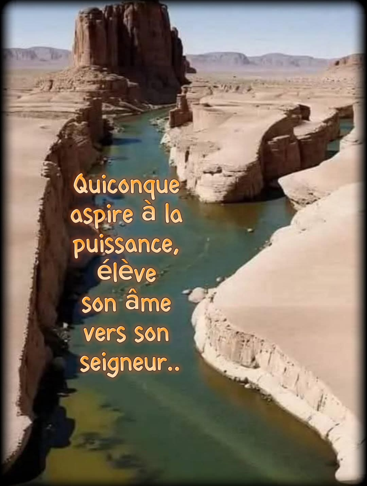
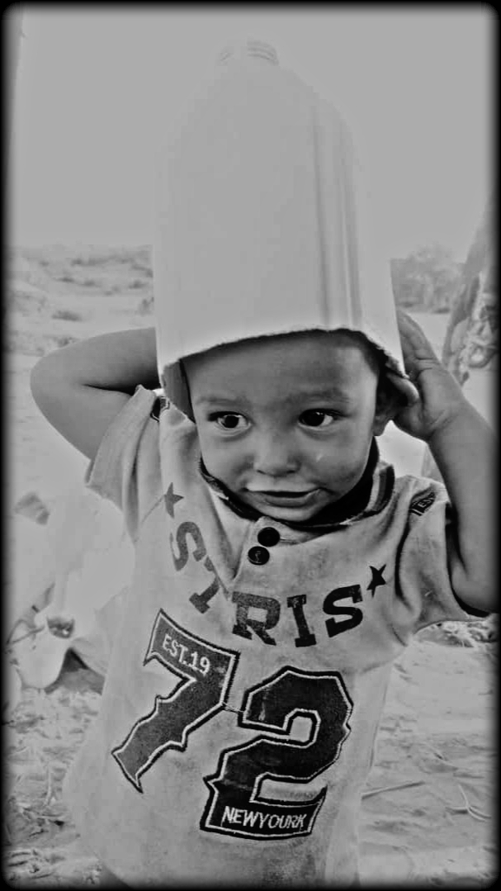

Sommaire
-

L’appel du désert
Le souffle des dunes, la mémoire du peuple, et l'appel silencieux d'une terre oubliée. -
 Les puits d’Azawad – Promesses de vie
Les puits d’Azawad – Promesses de vie
Une ode à la dignité, à la soif, et aux kilomètres parcourus pour faire jaillir la vie du sable. -

Les enfants oubliés
Un hommage aux enfants d’Azawad, entre dignité, silence et espérance.